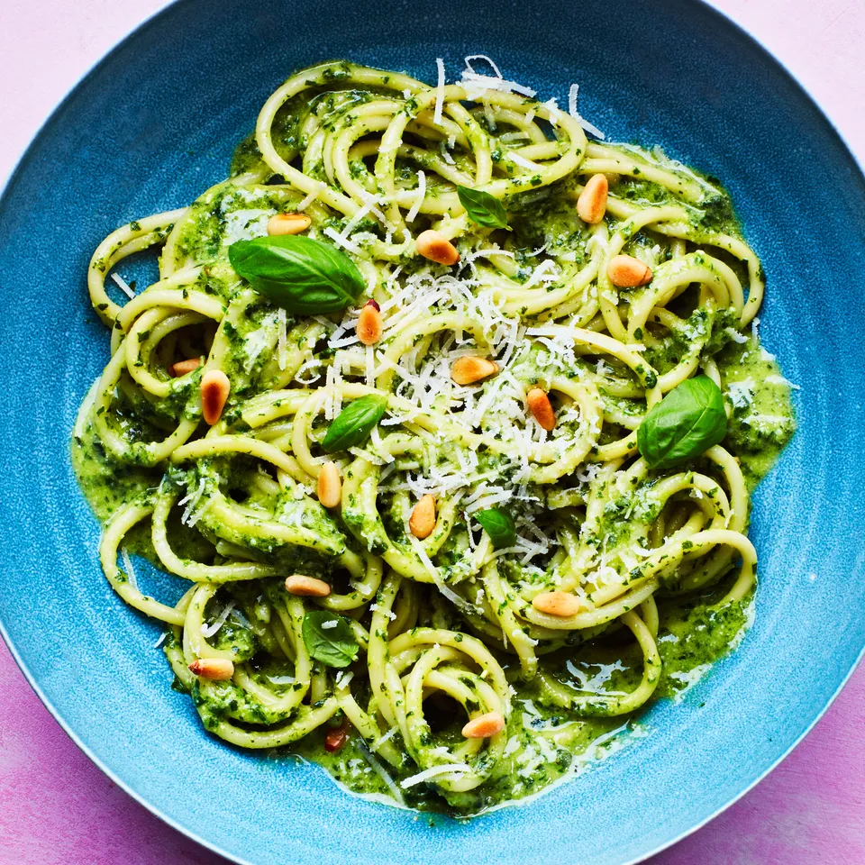

Spring Pesto Pasta

Description
Blanching fresh basil leaves before blending is the key to this vibrant, ultra-herby pesto. Perfect for pasta, it also dresses up pizza, scrambled eggs, and more.
- 1 pound pasta
- 1/3 cup + 2 tbsp pine nuts
- 5 cups basil leaves
- 1 garlic clove
- 1/2 cup extra-virgin olive oil
- 1 cup finely graded Parmesan
- Cook pasta in a large pot of boiling salted water, stirring occasionally, until al dente; drain, reserving 2 Tbsp. pasta cooking liquid.
- Meanwhile, toast 2 Tbsp. pine nuts in a small skillet over medium-low heat, shaking skillet back and forth, until lightly toasted, 2–3 minutes; set aside.
- Blanch 5 cups basil in a small pot of boiling water 30 seconds. Using a slotted spoon or spider, transfer to a large bowl filled with ice water.
- Purée garlic, oil, 1/2 tsp. salt, and remaining 1/3 cup pine nuts in a blender until nuts are very finely chopped and mixture is creamy. Using your hands, lift basil from ice water, shaking off excess but not all water from leaves (a bit of water will aid emulsification). Add to blender and purée just to combine. Add 1 cup Parmesan; purée just to combine.
- Transfer pesto to a medium bowl, then stir in reserved pasta cooking liquid. Transfer pasta to a large serving bowl or platter and toss with pesto. Top with Parmesan and reserved toasted pine nuts and garnish with basil.